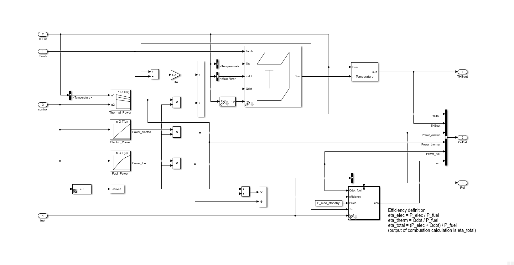
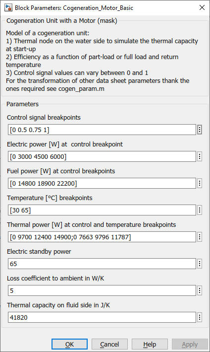

Cogeneration_Motor_Basic
Path: CARNOT/Basic/Thermal_Models
Purpose:
Basic model of a cogeneration unit based on lookup-table data.
Description:
The cogeneration model uses lookup-table data for the thermal and electric
power. The electric power can be modulated with the control signal. Thermal
power varies with the control signal and the return line temperature. The "fuel
power" (consumed fuel energy flow) depends on the control signal.
A
Thermal_Node is used to model the inertia of the
cogeneration unit.
Efficiency definition:
eta_elec = P_elec / P_fuel
eta_therm = Qdot / P_fuel
eta_total = (P_elec + Qdot) / P_fuel
Output eco of combustion_calculation is eta_total.

Input:
| Tamb | : | ambient temperature in °C (for thermal losses) |
| THBin | : | Thermo-Hydraulic Bus of the return line |
| control | : | control signal [0..1] |
| fuel | : | bus for the fuel type, use Fuel block to create the bus |
Output:
| THBout | : | Thermo-Hydraulic Bus of the flow line |
| CoDat | : | Bus with informations for display and logging |
| 1 | THBin | |
| 2 | THBout | |
| 3 | Power_electric in W | |
| 4 | Power_thermal in W | |
| 5 | Power_fuel in W | |
| 5 | eco bus with the output of the combustion_calculation | |
| Pel | : | electric power in W |
Parameters and Dialog Box

Examples:
Open the example explorer from the Matlab command window
ExampleBrowser
or load the examples via the CARNOT library.
Characteristics:
| Direct Feedthrough | : | Yes |
| Sample Time | : | Inherited from driving block |
| Vectorized | : | Yes / No |